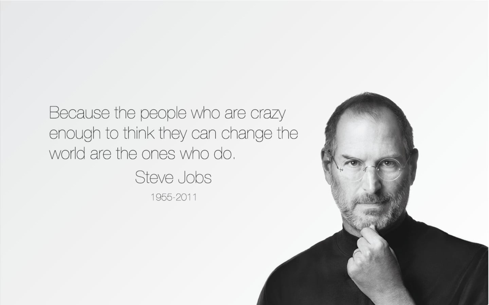

Apple — одна из самых известных технологических компаний в мире, создающая устройства, программное обеспечение и цифровые сервисы для миллионов людей. Компания была основана в 1976 году и с тех пор стала символом инноваций, минималистичного дизайна и высокого качества. Наиболее популярными продуктами Apple являются iPhone, MacBook, iPad, Apple Watch и AirPods. Особенность экосистемы Apple заключается в том, что все устройства тесно связаны между собой и работают максимально удобно для пользователя. Компания уделяет большое внимание не только технологиям, но и дизайну интерфейсов, материалам корпуса и пользовательскому опыту. Apple активно развивает собственные операционные системы, включая iOS, macOS и watchOS, благодаря чему устройства компании отличаются стабильностью и высокой производительностью. Важной частью философии Apple является простота использования и внимание к деталям. Многие современные технологические решения, ставшие стандартом индустрии, были популяризированы именно Apple. Компания также занимается развитием сервисов, таких как Apple Music, iCloud и App Store. Сегодня Apple считается одной из самых дорогих и влиятельных компаний в мире, а её продукция используется как для работы, так и для творчества, общения и развлечений. Бренд Apple ассоциируется с современными технологиями, премиальным качеством и постоянным стремлением к инновациям.
«У нас есть шанс построить лучший в мире офис. Я искренне верю, что у нас получится создать потрясающий дом для новых поколений сотрудников» The Next Web